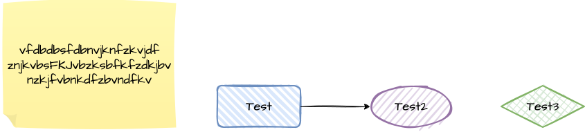
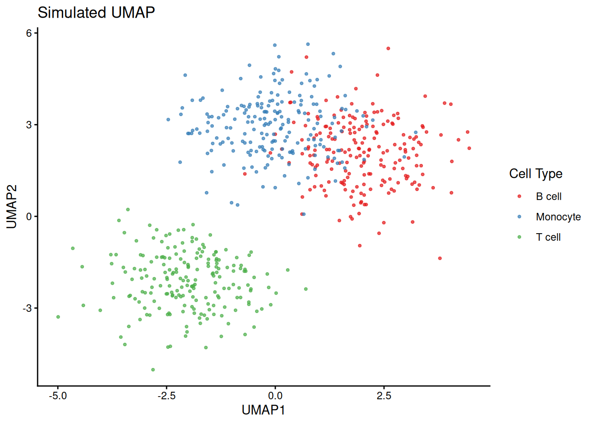
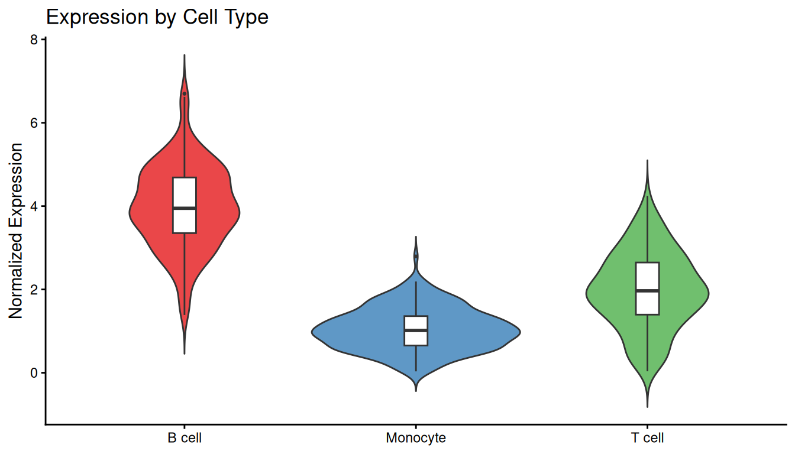
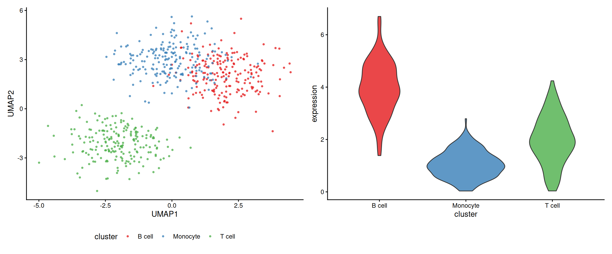

Show the code
library(ggplot2)
library(patchwork)Assess and remove low-quality cells before downstream analysis

library(ggplot2)
library(patchwork)set.seed(42)
df <- data.frame(
UMAP1 = c(rnorm(200, -2), rnorm(200, 2), rnorm(200, 0)),
UMAP2 = c(rnorm(200, -2), rnorm(200, 2), rnorm(200, 3)),
cluster = rep(c("T cell", "B cell", "Monocyte"), each = 200)
)
ggplot(df, aes(x = UMAP1, y = UMAP2, color = cluster)) +
geom_point(size = 0.8, alpha = 0.7) +
scale_color_brewer(palette = "Set1") +
theme_classic() +
labs(title = "Simulated UMAP", color = "Cell Type")
df$expression <- c(
abs(rnorm(200, 2, 1)),
abs(rnorm(200, 4, 1)),
abs(rnorm(200, 1, 0.5))
)
ggplot(df, aes(x = cluster, y = expression, fill = cluster)) +
geom_violin(trim = FALSE, alpha = 0.8) +
geom_boxplot(width = 0.1, fill = "white", outlier.size = 0.5) +
scale_fill_brewer(palette = "Set1") +
theme_classic() +
labs(title = "Expression by Cell Type",
x = NULL, y = "Normalized Expression") +
theme(legend.position = "none")
p1 <- ggplot(df, aes(x = UMAP1, y = UMAP2, color = cluster)) +
geom_point(size = 0.8, alpha = 0.7) +
scale_color_brewer(palette = "Set1") +
theme_classic() +
theme(legend.position = "bottom")
p2 <- ggplot(df, aes(x = cluster, y = expression, fill = cluster)) +
geom_violin(alpha = 0.8) +
scale_fill_brewer(palette = "Set1") +
theme_classic() +
theme(legend.position = "none")
p1 | p2
sessionInfo()R version 4.5.2 (2025-10-31)
Platform: x86_64-pc-linux-gnu
Running under: Ubuntu 24.04.3 LTS
Matrix products: default
BLAS: /usr/lib/x86_64-linux-gnu/blas/libblas.so.3.12.0
LAPACK: /usr/lib/x86_64-linux-gnu/lapack/liblapack.so.3.12.0 LAPACK version 3.12.0
locale:
[1] LC_CTYPE=C.UTF-8 LC_NUMERIC=C LC_TIME=C.UTF-8
[4] LC_COLLATE=C.UTF-8 LC_MONETARY=C.UTF-8 LC_MESSAGES=C.UTF-8
[7] LC_PAPER=C.UTF-8 LC_NAME=C LC_ADDRESS=C
[10] LC_TELEPHONE=C LC_MEASUREMENT=C.UTF-8 LC_IDENTIFICATION=C
time zone: Asia/Bangkok
tzcode source: system (glibc)
attached base packages:
[1] stats graphics grDevices utils datasets methods base
other attached packages:
[1] patchwork_1.3.2 ggplot2_4.0.1
loaded via a namespace (and not attached):
[1] vctrs_0.6.5 cli_3.6.5 knitr_1.50 rlang_1.1.7
[5] xfun_0.55 generics_0.1.4 S7_0.2.1 jsonlite_2.0.0
[9] labeling_0.4.3 glue_1.8.0 htmltools_0.5.9 scales_1.4.0
[13] rmarkdown_2.30 grid_4.5.2 tibble_3.3.1 evaluate_1.0.5
[17] fastmap_1.2.0 yaml_2.3.12 lifecycle_1.0.5 compiler_4.5.2
[21] codetools_0.2-20 dplyr_1.1.4 RColorBrewer_1.1-3 pkgconfig_2.0.3
[25] htmlwidgets_1.6.4 farver_2.1.2 digest_0.6.39 R6_2.6.1
[29] tidyselect_1.2.1 dichromat_2.0-0.1 pillar_1.11.1 magrittr_2.0.4
[33] withr_3.0.2 tools_4.5.2 gtable_0.3.6